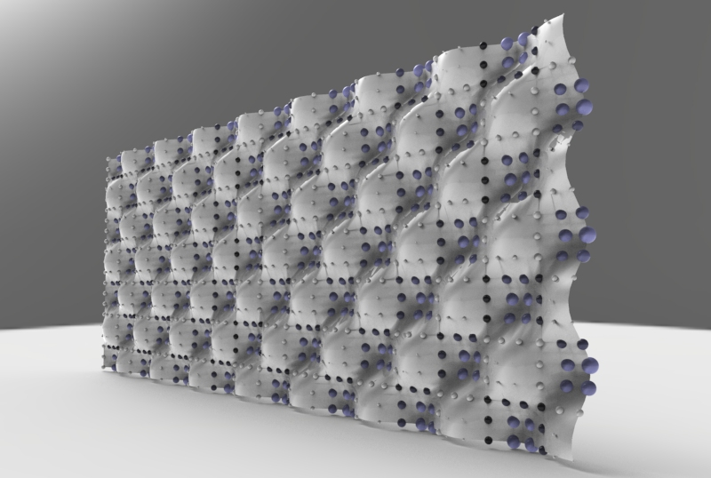
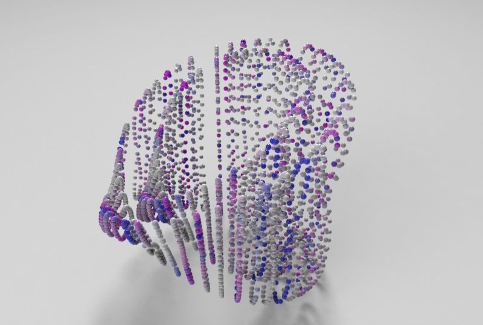

Rhino.Python - 1D 2D 3


"""
####################################################################
Computational Design Assignment 02
Kao, Ting-Chun
Assignment to use for loop
####################################################################
"""
from scriptcontext import doc, escape_test
import rhinoscriptsyntax as rs
import Rhino.Geometry as rg
import Rhino.DocObjects as rd
import Rhino
import time
import System.Guid as guid
import System.Drawing as sd
import math
import random
dimension = rs.GetInteger("give me one to three dimension: ", 2, 1, 3)
print(dimension)
# some functions
def PtMat(x, y, z):
pt = rg.Point3d(x, y, z)
materialIndex = doc.Materials.Add()
material = doc.Materials[materialIndex]
if dimension == 2:
if x > 0 and y>0 and z>0:
material.DiffuseColor = sd.Color.FromArgb(y/5*255*0.5, y/5*255*0.5, y/5*255)
else:
material.DiffuseColor = sd.Color.FromArgb( 255, abs(math.sin(x))*255, 255)
material.CommitChanges()
attr = Rhino.DocObjects.ObjectAttributes()
attr = rd.ObjectAttributes()
attr.MaterialSource = Rhino.DocObjects.ObjectMaterialSource.MaterialFromObject
attr.MaterialIndex = materialIndex
if dimension == 2:
sphere = rg.Sphere(pt, (y+5)/5)
elif dimension == 3:
sphere = rg.Sphere(pt, 0.2)
else:
sphere = rg.Sphere(pt, 2)
if doc.Objects.AddPoint(pt, attr) != guid.Empty:
doc.Objects.AddSphere(sphere, attr)
return pt
def noneLoopPt():
pt = PtMat(i*math.sin(5*i), i*math.cos(5*i), i)
return pt
def oneLoopCrv():
pts = []
for x in range(50):
y = math.sin(x) * math.sin(i)
pts.append(PtMat(5*x, 5*y, 5*i))
crv = rs.AddCurve(pts)
return crv
def twoLoopCrv():
pts = []
crvs = []
for x in range(30):
for y in range(40):
a = ( i + math.cos(x/2)*math.sin(y) - math.sin(x/2)*math.sin(2*y) ) * math.cos(x)
b = ( i + math.cos(x/2)*math.sin(y) - math.sin(x/2)*math.sin(2*y) ) * math.sin(x)
c = 10*math.sin(x/2)*math.sin(y) - math.cos(x/2)*math.sin(2*y)
pts.append(PtMat(a, b, c))
crv = rs.AddCurve(pts)
crvs.append(crv)
return crvs
def threeLoopSrf():
# haven't getten any idea to having a good one.
return 0
def drawTime():
FPS = 30
last_time = time.time()
# setup variables
global i
i = 3
curves = []
pts = []
# whatever the loop is...
while True:
# draw animation
if dimension == 3:
i += 3
else:
i += 1
# pause so that the animation runs at 30 fps
new_time = time.time()
# see how many milliseconds we have to sleep for
# then divide by 1000.0 since time.sleep() uses seconds
sleep_time = ((1000.0 / FPS) - (new_time - last_time)) / 1000.0
if sleep_time > 0:
time.sleep(sleep_time)
last_time = new_time
if dimension == 2:
crv = oneLoopCrv()
curves.append(crv)
if i > 20:
rs.AddLoftSrf(curves)
break
elif dimension == 3:
curves = twoLoopCrv()
escape_test()
else:
pt = noneLoopPt()
pts.append(pt)
if i > 80:
#rs.AddLoftSrf(curves)
rs.AddCurve(pts)
break
escape_test()
def main():
drawTime()
if __name__ == "__main__":
main()